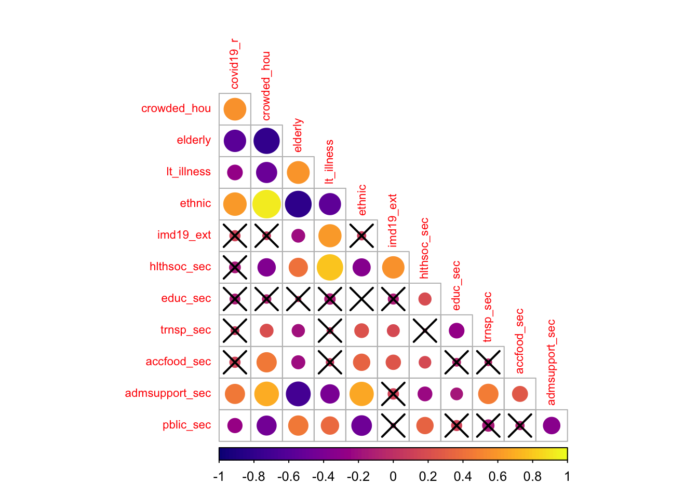
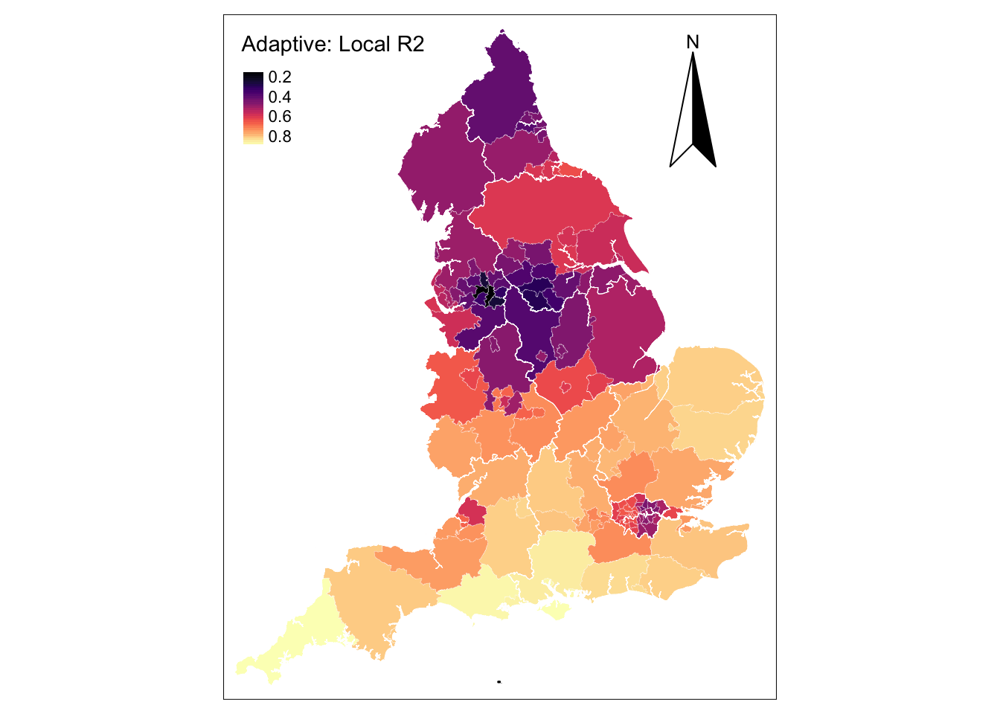
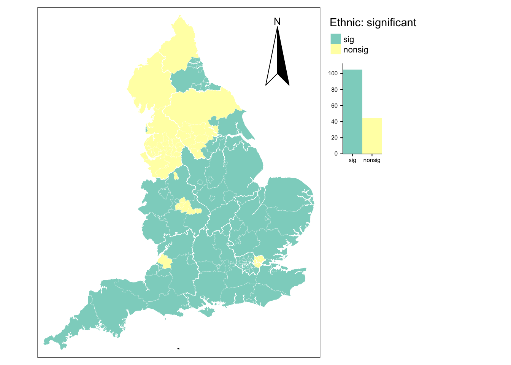

# Data manipulation, transformation and visualisation
library(tidyverse)
# Nice tables
library(kableExtra)
# Simple features (a standardised way to encode vector data ie. points, lines, polygons)
library(sf)
# Spatial objects conversion
library(sp)
# Thematic maps
library(tmap)
# Colour palettes
library(RColorBrewer)
# More colour palettes
library(viridis) # nice colour schemes
# Fitting geographically weighted regression models
library(spgwr)
# Obtain correlation coefficients
library(corrplot)
# Exportable regression tables
library(jtools)
# Assess multicollinearity
library(car)9 Geographically Weighted Regression
This chapter provides an introduction to geographically weighted regression models.
The content of this chapter is based on:
Fotheringham, Brunsdon, and Charlton (2002), a must-go book if you are working or planning to start working on geographically weighted regression modelling.
Comber et al. (2022) provide a roadmap to approach various practical issues in the application of GWR.
9.1 Dependencies
This chapter uses the following libraries:
9.2 Data
For this chapter, we will use data on:
cumulative COVID-19 confirmed cases from 1st January, 2020 to 14th April, 2020 from Public Health England via the GOV.UK dashboard;
resident population characteristics from the 2011 census, available from the Office of National Statistics; and,
2019 Index of Multiple Deprivation (IMD) data from GOV.UK and published by the Ministry of Housing, Communities & Local Government.
The data used for this Chapter are organised at the ONS Upper Tier Local Authority (UTLA) level - also known as Counties and Unitary Authorities. They are the geographical units used to report COVID-19 data.
If you use the dataset utilised in this chapter, make sure cite this book. For a full list of the variables included in the data set used in this Chapter, see the readme file in the gwr data folder.1
1 Read the file in R by executing read_tsv("data/gwr/readme.txt"). Ensure the library readr is installed before running read_tsv.99079
Let’s read the data:
# clean workspace
rm(list=ls())
# read data
utla_shp <- st_read("data/gwr/Covid19_total_cases_geo.shp") %>%
select(objct, cty19c, ctyu19nm, long, lat, st_rs, st_ln, X2020.04.14, I.PL1, IMD20, IMD2., Rsdnt, Hshld, Dwlln, Hsh_S, E_16_, A_65_, Ag_85, Mixed, Indin, Pkstn, Bngld, Chins, Oth_A, Black, Othr_t, CB_U_, Crwd_, Lng__, Trn__, Adm__, Ac___, Pb___, Edctn, H____, geometry)
# replace nas with 0s
utla_shp[is.na(utla_shp)] <- 0
# explore data
str(utla_shp)9.3 Recap: Spatial Effects
To this point, we have implicitly discussed three distinctive spatial effects:
Spatial heterogeneity refers to the uneven distribution of a variable’s values across space
Spatial dependence refers to the spatial relationship of a variable’s values for a pair of locations at a certain distance apart, so that they are more similar (or less similar) than expected for randomly associated pairs of observations
Spatial nonstationarity refers to variations in the relationship between an outcome variable and a set of predictor variables across space
In previous sessions, we considered multilevel models to deal with spatial nonstationarity, recognising that the strength and direction of the relationship between an outcome \(y\) and a set of predictors \(x\) may vary over space. Here we consider a different approach, namely geographically weighted regression (GWR).
9.4 Exploratory Analysis
We will explore this technique through an empirical analysis considering the current global COVID-19 outbreak. Specifically we will seek to identify potential contextual factors that may be related to an increased risk of local infection. Population density, overcrowded housing, vulnerable individuals and critical workers have all been linked to a higher risk of COVID-19 infection.
First, we will define and develop some basic understanding of our variable of interest. We define the risk of COVID-19 infection by the cumulative number of confirmed positive cases COVID-19 per 100,000 people:
# risk of covid-19 infection
utla_shp$covid19_r <- (utla_shp$X2020.04.14 / utla_shp$Rsdnt) * 100000
# histogram
ggplot(data = utla_shp) +
geom_density(alpha=0.8, colour="black", fill="lightblue", aes(x = covid19_r)) +
theme_classic()
# distribution in numbers
summary(utla_shp$covid19_r) Min. 1st Qu. Median Mean 3rd Qu. Max.
32.11 92.81 140.15 146.66 190.96 341.56 The results indicate a wide variation in the risk of infection across UTLAs in England, ranging from 31 to 342 confirmed positive cases of COVID-19 per 100,000 people with a median of 147. We map the cases to understand their spatial structure.
# read region boundaries for a better looking map
reg_shp <- st_read("data/gwr/Regions_December_2019_Boundaries_EN_BGC.shp")Reading layer `Regions_December_2019_Boundaries_EN_BGC' from data source
`/Users/franciscorowe/Dropbox/Francisco/uol/teaching/envs453/202324/san/data/gwr/Regions_December_2019_Boundaries_EN_BGC.shp'
using driver `ESRI Shapefile'
Simple feature collection with 9 features and 9 fields
Geometry type: MULTIPOLYGON
Dimension: XY
Bounding box: xmin: 82672 ymin: 5342.7 xmax: 655653.8 ymax: 657536
Projected CRS: OSGB36 / British National Grid# ensure geometry is valid
utla_shp = sf::st_make_valid(utla_shp)
reg_shp = sf::st_make_valid(reg_shp)
# map
legend_title = expression("Cumulative cases per 100,000")
map_utla = tm_shape(utla_shp) +
tm_fill(col = "covid19_r", title = legend_title, palette = magma(256), style = "cont") + # add fill
tm_borders(col = "white", lwd = .1) + # add borders
tm_compass(type = "arrow", position = c("right", "top") , size = 5) + # add compass
tm_scale_bar(breaks = c(0,1,2), text.size = 0.7, position = c("center", "bottom")) + # add scale bar
tm_layout(bg.color = "white") # change background colour
map_utla + tm_shape(reg_shp) + # add region boundaries
tm_borders(col = "white", lwd = .5) # add borders
The map shows that concentrations of high incidence of infections in the metropolitan areas of London, Liverpool, Newcastle, Sheffield, Middlesbrough and Birmingham. Below we list the UTLAs in these areas in descending order.
hotspots <- utla_shp %>% select(ctyu19nm, covid19_r) %>%
filter(covid19_r > 190)
hotspots[order(-hotspots$covid19_r),]Simple feature collection with 38 features and 2 fields
Geometry type: GEOMETRY
Dimension: XY
Bounding box: xmin: 293941.4 ymin: 155850.8 xmax: 561956.7 ymax: 588517.4
Projected CRS: Transverse_Mercator
First 10 features:
ctyu19nm covid19_r geometry
14 Brent 341.5645 POLYGON ((520113.1 190480.8...
32 Southwark 337.1687 POLYGON ((532223 180545.4, ...
27 Lambeth 305.5238 POLYGON ((531189.5 180531.3...
22 Harrow 286.1254 POLYGON ((517363.8 194171.3...
17 Croydon 276.8467 POLYGON ((531549.3 171045, ...
12 Barnet 274.1410 POLYGON ((524645.2 198138.3...
28 Lewisham 261.3408 POLYGON ((536691.6 178958.8...
30 Newham 258.4550 POLYGON ((542600.7 186497.3...
38 Cumbria 255.6726 MULTIPOLYGON (((321364.8 46...
15 Bromley 253.7234 POLYGON ((542252.7 172828.7...Challenge 1: How does Liverpool ranked in this list?
9.5 Global Regression
To provide an intuitive understanding of GWR, a useful start is to explore the data using an ordinary least squares (OLS) linear regression model. The key issue here is to understand if high incidence of COVID-19 is linked to structural differences across UTLAs in England. As indicated above, confirmed positive cases of COVID-19 have been associated with overcrowded housing, vulnerable populations - including people in elderly age groups, economically disadvantaged groups and those suffering from chronic health conditions - ethnic minorities, critical workers in the health & social work, education, accommodation & food, transport, and administrative & support sectors. So, let’s create a set of variables to approximate these factors.
# define predictors
utla_shp <- utla_shp %>% mutate(
crowded_hou = Crwd_ / Hshld, # share of crowded housing
elderly = (A_65_ + Ag_85) / Rsdnt, # share of population aged 65+
lt_illness = Lng__ / Rsdnt, # share of population in long-term illness
ethnic = (Mixed + Indin + Pkstn + Bngld + Chins + Oth_A + Black + Othr_t) / Rsdnt, # share of nonwhite population
imd19_ext = IMD20, # proportion of a larger area’s population living in the most deprived LSOAs in the country
hlthsoc_sec = H____ / E_16_, # share of workforce in the human health & social work sector
educ_sec = Edctn / E_16_, # share of workforce in the education sector
trnsp_sec= Trn__ / E_16_, # share of workforce in the Transport & storage sector
accfood_sec = Ac___ / E_16_, # share of workforce in the accommodation & food service sector
admsupport_sec = Adm__ / E_16_, # share of workforce in the administrative & support sector
pblic_sec = Pb___ / E_16_ # share of workforce in the public administration & defence sector
)Let’s quickly examine how they correlate to our outcome variable i.e. incidence rate of COVID-19 using correlation coefficients and correlograms.
# obtain a matrix of Pearson correlation coefficients
df_sel <- st_set_geometry(utla_shp[,37:48], NULL) # temporary data set removing geometries
cormat <- cor(df_sel, use="complete.obs", method="pearson")
# significance test
sig1 <- corrplot::cor.mtest(df_sel, conf.level = .95)
# creta a correlogram
corrplot::corrplot(cormat, type="lower",
method = "circle",
order = "original",
tl.cex = 0.7,
p.mat = sig1$p, sig.level = .05,
col = viridis::viridis(100, option = "plasma"),
diag = FALSE)
The correlogram shows the strength and significance of the linear relationship between our set of variables. The size of the circle reflects the strength of the relationships as captured by the Pearson correlation coefficient, and crosses indicate statistically insignificant relationships at the 95% level of confidence. The colour indicate the direction of the relationship with dark (light) colours indicating a negative (positive) association.
The results indicate that the incidence of COVID-19 is significantly and positively related to the share of overcrowded housing, nonwhite ethnic minorities and administrative & support workers. Against expectations, the incidence of COVID-19 appears to be negatively correlated with the share of elderly population, of population suffering from long-term illness and of administrative & support workers, and displays no significant association with the share of the population living in deprived areas as well as the share of public administration & defence workers, and health & social workers. The latter probably reflects the effectiveness of the protective measures undertaken to prevent infection among these population groups, but it may also reflect the partial coverage of COVID-19 testing and underreporting. It may also reveal the descriptive limitations of correlation coefficients as they show the relationship between a pairs of variables, not controlling for others. Correlation coefficients can thus produce spurious relationships resulting from confounded variables. We will return to this point below.
The results also reveal high collinearity between particular pairs of variables, notably between the share of crowded housing and of nonwhite ethnic population, the share of crowded housing and of elderly population, the share of overcrowded housing and of administrative & support workers, the share of elderly population and of population suffering from long-term illness. A more refined analysis of multicollinearity is needed. Various diagnostics for multicollinearity in a regression framework exist, including matrix condition numbers (CNs), predictor variance inflation factors (VIFs) and variance decomposition factors (VDPs). Rules of thumb (CNs > 30, VIFs > 10 and VDPs > 0.5) to indicate worrying levels of collinearity can be found in Belsley, Kuh, and Welsch (2005). To avoid problems of multicollinearity, often a simple strategy is to remove highly correlated predictors. The difficultly is in deciding which predictor(s) to remove, especially when all are considered important. Keep this in mind when specifying your model.
Challenge 2: Analyse the relationship of all the variables executing
pairs(df_sel). How accurate would a linear regression be in capturing the relationships for our set of variables?
9.5.1 Global Regression Results
To gain a better understanding of these relationships, we can regress the incidence rate of COVID-19 on a series of factors capturing differences across areas. To focus on the description of GWR, we keep our analysis simple and study the incidence rate of COVID-19 as a function of the share of nonwhite ethnic population and of population suffering from long-term illness by estimating the following OLS linear regression model:
# attach data
attach(utla_shp)
# specify a model equation
eq1 <- covid19_r ~ ethnic + lt_illness
model1 <- lm(formula = eq1, data = utla_shp)
# estimates
summary(model1)
Call:
lm(formula = eq1, data = utla_shp)
Residuals:
Min 1Q Median 3Q Max
-109.234 -38.386 -4.879 29.284 143.786
Coefficients:
Estimate Std. Error t value Pr(>|t|)
(Intercept) 63.77 30.13 2.117 0.036 *
ethnic 271.10 30.65 8.845 2.64e-15 ***
lt_illness 216.20 151.88 1.424 0.157
---
Signif. codes: 0 '***' 0.001 '**' 0.01 '*' 0.05 '.' 0.1 ' ' 1
Residual standard error: 51 on 147 degrees of freedom
Multiple R-squared: 0.3926, Adjusted R-squared: 0.3844
F-statistic: 47.52 on 2 and 147 DF, p-value: < 2.2e-16We also compute the VIFs for the variables in the model:
vif(model1) ethnic lt_illness
1.43015 1.43015 The regression results indicate a positive relationship exists between the share of nonwhite population and an increased risk of COVID-19 infection. A one percentage point increase in the share of nonwhite population returns a 271 rise in the cumulative count of COVID-19 infection per 100,000 people, everything else constant. The results also reveal a positive (albeit statistically insignificant) relationship between the share of population suffering from long-term illness and an increased risk of COVID-19 infection, after controlling for the share of nonwhite population, thereby confirming our suspicion about the limitations of correlation coefficients; that is, once differences in the share of nonwhite population are taken into account, the association between the share of population suffering from long-term illness and an increased risk of COVID-19 infection becomes positive. We also test for multicollinearity. The VIFs are below 10 indicating that multicollinearity is not highly problematic.
The \(R^{2}\) value for the OLS regression is 0.393 indicating that our model explains only 39% of the variance in the rate of COVID-19 infection. This leaves 71% of the variance unexplained. Some of this unexplained variance can be because we have only included two explanatory variables in our model, but also because the OLS regression model assumes that the relationships in the model are constant over space; that is, it assumes a stationary process. Hence, an OLS regression model is considered to capture global relationships. However, relationships may vary over space. Suppose, for instance, that there are intrinsic behavioural variations across England and that people have adhered more strictly to self-isolation and social distancing measures in some areas than in others, or that ethnic minorities are less exposed to contracting COVID-19 in certain parts of England. If such variations in associations exist over space, our estimated OLS model will be a misspecification of reality because it assumes these relationships to be constant.
To better understand this potential misspecification, we investigate the model residuals which show high variability (see below). The distribution is non-random displaying large positive residuals in the metropolitan areas of London, Liverpool, Newcastle (in light colours) and the Lake District and large negative residuals across much of England (in black). This conforms to the spatial pattern of confirmed COVID-19 cases with high concentration in a limited number of metropolitan areas (see above). While our residual map reveals that there is a problem with the OLS model, it does not indicate which, if any, of the parameters in the model might exhibit spatial nonstationarity. A simple way of examining if the relationships being modelled in our global OLS model are likely to be stationary over space would be to estimate separate OLS model for each UTLA in England. But this would require higher resolution i.e. data within UTLA, and we only have one data point per UTLA. -Fotheringham, Brunsdon, and Charlton (2002) (2002, p.40-44) discuss alternative approaches and their limitations.
utla_shp$res_m1 <- residuals(model1)
# map
legend_title = expression("OLS residuals")
map_utla = tm_shape(utla_shp) +
tm_fill(col = "res_m1", title = legend_title, palette = magma(256), style = "cont") + # add fill
tm_borders(col = "white", lwd = .1) + # add borders
tm_compass(type = "arrow", position = c("right", "top") , size = 5) + # add compass
tm_scale_bar(breaks = c(0,1,2), text.size = 0.7, position = c("center", "bottom")) + # add scale bar
tm_layout(bg.color = "white") # change background colour
map_utla + tm_shape(reg_shp) + # add region boundaries
tm_borders(col = "white", lwd = .5) # add borders
9.6 Fitting a Geographically Weighted Regression
GWR overcomes the limitation of the OLS regression model of generating a global set of estimates. The basic idea behind GWR is to examine the way in which the relationships between a dependent variable and a set of predictors might vary over space. GWR operates by moving a search window from one regression point to the next, working sequentially through all the existing regression points in the dataset. A set of regions is then defined around each regression point and within the search window. A regression model is then fitted to all data contained in each of the identified regions around a regression point, with data points closer to the sample point being weighted more heavily than are those farther away. This process is repeated for all samples points in the dataset. For a data set of 150 observations GWR will fit 150 weighted regression models. The resulting local estimates can then be mapped at the locations of the regression points to view possible variations in the relationships between variables.
Graphically, GWR involves fitting a spatial kernel to the data as described in the Fig. 1. For a given regression point \(X\), the weight (\(W\)) of a data point is at a maximum at the location of the regression point. The weight decreases gradually as the distance between two points increases. A regression model is thus calibrated locally by moving the regression point across the area under study. For each location, the data are weighted differently so that the resulting estimates are unique to a particular location.

9.6.1 Fixed or Adaptive Kernel
A key issue is to decide between two options of spatial kernels: a fixed kernel or an adaptive kernel. Intuitively, a fixed kernel involves using a fixed bandwidth to define a region around all regression points as displayed in Fig. 1. The extent of the kernel is determined by the distance to a given regression point, with the kernel being identical at any point in space. An adaptive kernel involves using varying bandwidth to define a region around regression points as displayed in Fig. 2. The extent of the kernel is determined by the number of nearest neighbours from a given regression point. The kernels have larger bandwidths where the data are sparse.

9.6.2 Optimal Bandwidth
A second issue is to define the extent of geographical area (i.e. optimal bandwidth) of the spatial kernel. The bandwidth is the distance beyond which a value of zero is assigned to weight observations. Larger bandwidths include a larger number of observations receiving a non-zero weight and more observations are used to fit a local regression.
To determine the optimal bandwidth, a cross-validation approach is applied; that is, for a location, a local regression is fitted based on a given bandwidth and used to predict the value of the dependent variable. The resulting predicted value is used to compute the residuals of the model. Residuals are compared using a series of bandwidth and the bandwidth returning the smallest local residuals are selected.
Variance and Bias Trade off
Choosing an optimal bandwidth involves a compromise between bias and precision. For example, a larger bandwidth will involve using a larger number of observations to fit a local regression, and hence result in reduced variance (or increased precision) but high bias of estimates. On the other hand, too small bandwidth involves using a very small number of observations resulting in increased variance but small bias. An optimal bandwidth offers a compromise between bias and variance.
9.6.3 Shape of Spatial Kernel
Two general set of kernel functions can be distinguished: continuous kernels and kernels with compact support. Continuous kernels are used to weight all observations in the study area and includes uniform, Gaussian and Exponential kernel functions. Kernel with compact support are used to assign a nonzero weight to observations within a certain distance and a zero weight beyond it. The shape of the kernel has been reported to cause small changes to resulting estimates (Brunsdon, Fotheringham, and Charlton 1998).
9.6.4 Selecting a Bandwidth
Let’s now implement a GWR model. The first key step is to define the optimal bandwidth. We first illustrate the use of a fixed spatial kernel.
9.6.4.1 Fixed Bandwidth
Cross-validation is used to search for the optimal bandwidth. Recall that this procedure compares the model residuals based on different bandwidths and chooses the optimal solution i.e. the bandwidth returning the smallest model residuals based on a given model specification. A key parameter here is the shape of the geographical weight function (gweight). We set it to be a Gaussian function which is the default. A bi-square function is recommended to reduce computational time. Since we have a simple model, a Gaussian function should not take that long. Note that we set the argument longlat to TRUE and use latitude and longitude for coordinates (coords). When longlat is set to TRUE, distances are measured in kilometres.
# find optimal kernel bandwidth using cross validation
fbw <- gwr.sel(eq1,
data = utla_shp,
coords=cbind( long, lat),
longlat = TRUE,
adapt=FALSE,
gweight = gwr.Gauss,
verbose = FALSE)
# view selected bandwidth
fbw[1] 29.30417The result indicates that the optimal bandwidth is 39.79 kms. This means that neighbouring UTLAs within a fixed radius of 39.79 kms will be taken to estimate local regressions. To estimate a GWR, we execute the code below in which the optimal bandwidth above is used as an input in the argument bandwidth.
# fit a gwr based on fixed bandwidth
fb_gwr <- gwr(eq1,
data = utla_shp,
coords=cbind( long, lat),
longlat = TRUE,
bandwidth = fbw,
gweight = gwr.Gauss,
hatmatrix=TRUE,
se.fit=TRUE)
fb_gwrCall:
gwr(formula = eq1, data = utla_shp, coords = cbind(long, lat),
bandwidth = fbw, gweight = gwr.Gauss, hatmatrix = TRUE, longlat = TRUE,
se.fit = TRUE)
Kernel function: gwr.Gauss
Fixed bandwidth: 29.30417
Summary of GWR coefficient estimates at data points:
Min. 1st Qu. Median 3rd Qu. Max. Global
X.Intercept. -187.913 -42.890 93.702 211.685 792.989 63.768
ethnic -785.938 104.813 194.609 254.717 1078.854 271.096
lt_illness -2599.119 -563.128 128.176 690.603 1507.024 216.198
Number of data points: 150
Effective number of parameters (residual: 2traceS - traceS'S): 57.11019
Effective degrees of freedom (residual: 2traceS - traceS'S): 92.88981
Sigma (residual: 2traceS - traceS'S): 38.34777
Effective number of parameters (model: traceS): 44.65744
Effective degrees of freedom (model: traceS): 105.3426
Sigma (model: traceS): 36.00992
Sigma (ML): 30.17717
AICc (GWR p. 61, eq 2.33; p. 96, eq. 4.21): 1580.349
AIC (GWR p. 96, eq. 4.22): 1492.465
Residual sum of squares: 136599.2
Quasi-global R2: 0.7830537 We will skip the interpretation of the results for now and consider them in the next section. Now, we want to focus on the overall model fit and will map the results of the \(R^{2}\) for the estimated local regressions. To do this, we extract the model results stored in a Spatial Data Frame (SDF) and add them to our spatial data frame utla_shp. Note that the Quasi-global \(R^{2}\) is very high (0.77) indicating a high in-sample prediction accuracy.
# write gwr output into a data frame
fb_gwr_out <- as.data.frame(fb_gwr$SDF)
utla_shp$fmb_localR2 <- fb_gwr_out$localR2
# map
# Local R2
legend_title = expression("Fixed: Local R2")
map_fbgwr1 = tm_shape(utla_shp) +
tm_fill(col = "fmb_localR2", title = legend_title, palette = magma(256), style = "cont") + # add fill
tm_borders(col = "white", lwd = .1) + # add borders
tm_compass(type = "arrow", position = c("right", "top") , size = 5) + # add compass
tm_scale_bar(breaks = c(0,1,2), text.size = 0.7, position = c("center", "bottom")) + # add scale bar
tm_layout(bg.color = "white") # change background colour
map_fbgwr1 + tm_shape(reg_shp) + # add region boundaries
tm_borders(col = "white", lwd = .5) # add borders
The map shows very high in-sample model predictions of up to 80% in relatively large UTLAs (i.e. Cornwall, Devon and Cumbria) but poor predictions in Linconshire and small UTLAs in the North West and Yorkshire & The Humber Regions and the Greater London. The spatial distribution of this pattern may reflect a potential problem that arise in the application of GWR with fixed spatial kernels. The use of fixed kernels implies that local regressions for small spatial units may be calibrated on a large number of dissimilar areas, while local regressions for large areas may be calibrated on very few data points, giving rise to estimates with large standard errors. In extreme cases, generating estimates might not be possible due to insufficient variation in small samples. In practice, this issue is relatively common if the number of geographical areas in the dataset is small.
9.6.4.2 Adaptive Bandwidth
To reduce these problems, adaptive spatial kernels can be used. These kernels adapt in size to variations in the density of the data so that the kernels have larger bandwidths where the data are sparse and have smaller bandwidths where the data are plentiful. As above, we first need to search for the optimal bandwidth before estimating a GWR.
# find optimal kernel bandwidth using cross validation
abw <- gwr.sel(eq1,
data = utla_shp,
coords=cbind( long, lat),
longlat = TRUE,
adapt = TRUE,
gweight = gwr.Gauss,
verbose = FALSE)
# view selected bandwidth
abw[1] 0.03126972The optimal bandwidth is 0.03 indicating the proportion of observations (or k-nearest neighbours) to be included in the weighting scheme. In this example, the optimal bandwidth indicates that for a given UTLA, 3% of its nearest neighbours should be used to calibrate the relevant local regression; that is about 5 UTLAs. The search window will thus be variable in size depending on the extent of UTLAs. Note that here the optimal bandwidth is defined based on a data point’s k-nearest neighbours. It can also be defined by geographical distance as done above for the fixed spatial kernel. We next fit a GWR based on an adaptive bandwidth.
# fit a gwr based on adaptive bandwidth
ab_gwr <- gwr(eq1,
data = utla_shp,
coords=cbind( long, lat),
longlat = TRUE,
adapt = abw,
gweight = gwr.Gauss,
hatmatrix=TRUE,
se.fit=TRUE)
ab_gwrCall:
gwr(formula = eq1, data = utla_shp, coords = cbind(long, lat),
gweight = gwr.Gauss, adapt = abw, hatmatrix = TRUE, longlat = TRUE,
se.fit = TRUE)
Kernel function: gwr.Gauss
Adaptive quantile: 0.03126972 (about 4 of 150 data points)
Summary of GWR coefficient estimates at data points:
Min. 1st Qu. Median 3rd Qu. Max. Global
X.Intercept. -198.790 -28.398 113.961 226.437 346.510 63.768
ethnic -121.872 106.822 229.591 283.739 1162.123 271.096
lt_illness -1907.098 -746.468 -125.855 798.875 1496.549 216.198
Number of data points: 150
Effective number of parameters (residual: 2traceS - traceS'S): 48.59361
Effective degrees of freedom (residual: 2traceS - traceS'S): 101.4064
Sigma (residual: 2traceS - traceS'S): 36.57493
Effective number of parameters (model: traceS): 36.04378
Effective degrees of freedom (model: traceS): 113.9562
Sigma (model: traceS): 34.50222
Sigma (ML): 30.07257
AICc (GWR p. 61, eq 2.33; p. 96, eq. 4.21): 1546.029
AIC (GWR p. 96, eq. 4.22): 1482.809
Residual sum of squares: 135653.9
Quasi-global R2: 0.7845551 9.6.5 Model fit
Assessing the global fit of the model, marginal improvements are observed. The \(AIC\) and Residual sum of squares experienced marginal reductions, while the \(R^{2}\) increased compared to the GRW based on a fixed kernel. To gain a better understanding of these changes, as above, we map the \(R^{2}\) values for the estimated local regressions.
# write gwr output into a data frame
ab_gwr_out <- as.data.frame(ab_gwr$SDF)
utla_shp$amb_ethnic <- ab_gwr_out$ethnic
utla_shp$amb_lt_illness <- ab_gwr_out$lt_illness
utla_shp$amb_localR2 <- ab_gwr_out$localR2
# map
# Local R2
legend_title = expression("Adaptive: Local R2")
map_abgwr1 = tm_shape(utla_shp) +
tm_fill(col = "amb_localR2", title = legend_title, palette = magma(256), style = "cont") + # add fill
tm_borders(col = "white", lwd = .1) + # add borders
tm_compass(type = "arrow", position = c("right", "top") , size = 5) + # add compass
tm_scale_bar(breaks = c(0,1,2), text.size = 0.7, position = c("center", "bottom")) + # add scale bar
tm_layout(bg.color = "white") # change background colour
map_abgwr1 + tm_shape(reg_shp) + # add region boundaries
tm_borders(col = "white", lwd = .5) # add borders
The map reveals notable improvements in local estimates for UTLAs within West and East Midlands, the South East, South West and East of England. Estimates are still poor in hot spot UTLAs concentrating confirmed cases of COVID-19, such as the Greater London, Liverpool and Newcastle areas.
9.6.6 Interpretation
The key strength of GWR models is in identifying patterns of spatial variation in the associations between pairs of variables. The results reveal how these coefficients vary across the 150 UTLAs of England. To examine this variability, let’s first focus on the adaptive GWR output reported in Section 8.6.4.2. The output includes a summary of GWR coefficient estimates at various data points. The last column reports the global estimates which are the same as the coefficients from the OLS regression we fitted at the start of our analysis. For our variable nonwhite ethnic population, the GWR outputs reveals that local coefficients range from a minimum value of -148.41 to a maximum value of 1076.84, indicating that one percentage point increase in the share of nonwhite ethnic population is associated with a a reduction of 148.41 in the number of cumulative confirmed cases of COVID-19 per 100,000 people in some UTLAs and an increase of 1076.84 in others. For half of the UTLAs in the dataset, as the share of nonwhite ethnic population increases by one percentage point, the rate of COVID-19 will increase between 106.29 and 291.24 cases; that is, the inter-quartile range between the 1st Qu and the 3rd Qu. To analyse the spatial structure, we next map the estimated coefficients obtained from the adaptive kernel GWR.
# Ethnic
legend_title = expression("Ethnic")
map_abgwr2 = tm_shape(utla_shp) +
tm_fill(col = "amb_ethnic", title = legend_title, palette = magma(256), style = "cont") + # add fill
tm_borders(col = "white", lwd = .1) + # add borders
tm_compass(type = "arrow", position = c("right", "top") , size = 5) + # add compass
tm_scale_bar(breaks = c(0,1,2), text.size = 0.7, position = c("center", "bottom")) + # add scale bar
tm_layout(bg.color = "white") # change background colour
map_abgwr2 = map_abgwr2 + tm_shape(reg_shp) + # add region boundaries
tm_borders(col = "white", lwd = .5) # add borders
# Long-term Illness
legend_title = expression("Long-term illness")
map_abgwr3 = tm_shape(utla_shp) +
tm_fill(col = "amb_lt_illness", title = legend_title, palette = magma(256), style = "cont") + # add fill
tm_borders(col = "white", lwd = .1) + # add borders
tm_scale_bar(breaks = c(0,1,2), text.size = 0.7, position = c("center", "bottom")) + # add scale bar
tm_layout(bg.color = "white") # change background colour
map_abgwr3 = map_abgwr3 + tm_shape(reg_shp) + # add region boundaries
tm_borders(col = "white", lwd = .5) # add borders
tmap_arrange(map_abgwr2, map_abgwr3)
Analysing the map for long-term illness, a clear North-South divide can be identified. In the North we observed the expected positive relationship between COVID-19 and long-term illness i.e. as the share of the local population suffering from long-term illness rises, the cumulative number of positive COVID-19 cases is expected to increase. In the South, we observe the inverse pattern i.e. as the share of local population suffering from long-term illness rises, the cumulative number of positive COVID-19 cases is expected to drop. This pattern is counterintuitive but may be explained by the wider socio-economic disadvantages between the North and the South of England. The North is usually characterised by a persistent concentration of more disadvantaged neighbourhoods than the South where affluent households have tended to cluster for the last 40 years (Patias, Rowe, and Arribas-Bel 2021).
9.6.7 Assessing statistical significance
While the maps above offer valuable insights to understand the spatial pattering of relationships, they do not identify whether these associations are statistically significant. They may not be. Roughly, if a coefficient estimate has an absolute value of t greater than 1.96 and the sample is sufficiently large, then it is statistically significant. Our sample has only 150 observations, so we are more conservative and considered a coefficient to be statistically significant if it has an absolute value of t larger than 2. Note also that p-values could be computed - see Lu et al. (2014).
# compute t statistic
utla_shp$t_ethnic = ab_gwr_out$ethnic / ab_gwr_out$ethnic_se
# categorise t values
utla_shp$t_ethnic_cat <- cut(utla_shp$t_ethnic,
breaks=c(min(utla_shp$t_ethnic), -2, 2, max(utla_shp$t_ethnic)),
labels=c("sig","nonsig", "sig"))
# map statistically significant coefs for ethnic
legend_title = expression("Ethnic: significant")
map_sig = tm_shape(utla_shp) +
tm_fill(col = "t_ethnic_cat", title = legend_title, legend.hist = TRUE, midpoint = NA, textNA = "", colorNA = "white") + # add fill
tm_borders(col = "white", lwd = .1) + # add borders
tm_compass(type = "arrow", position = c("right", "top") , size = 5) + # add compass
tm_scale_bar(breaks = c(0,1,2), text.size = 0.7, position = c("center", "bottom")) + # add scale bar
tm_layout(bg.color = "white", legend.outside = TRUE) # change background colour & place legend outside
map_sig + tm_shape(reg_shp) + # add region boundaries
tm_borders(col = "white", lwd = .5) # add borders
# utla count
table(utla_shp$t_ethnic_cat)
sig nonsig
105 45 For the share of nonwhite population, 67% of all local coefficients are statistically significant and these are largely in the South of England. Coefficients in the North tend to be insignificant. Through outliers exist in both regions. In the South, nonsignificant coefficients are observed in the metropolitan areas of London, Birmingham and Nottingham, while significant coefficients exist in the areas of Newcastle and Middlesbrough in the North.
Challenge 3 Compute the t values for the intercept and estimated coefficient for long-term illness and create maps of their statistical significance. How many UTLAs report statistically significant coefficients?
9.6.8 Collinearity in GWR
An important final note is: collinearity tends to be problematic in GWR models. It can be present in the data subsets to estimate local coefficients even when not observed globally Wheeler and Tiefelsdorf (2005). Collinearity can be highly problematic in the case of compositional, categorical and ordinal predictors, and may result in exact local collinearity making the search for an optimal bandwidth impossible. A recent paper suggests potential ways forward (Comber et al. 2022).
9.7 Questions
We will continue to use the COVID-19 dataset. Please see sec-chp11 for details on the data.
sdf <- st_read("data/assignment_2_covid/covid19_eng.gpkg")Reading layer `covid19_eng' from data source
`/Users/franciscorowe/Dropbox/Francisco/uol/teaching/envs453/202324/san/data/assignment_2_covid/covid19_eng.gpkg'
using driver `GPKG'
Simple feature collection with 149 features and 507 fields
Geometry type: MULTIPOLYGON
Dimension: XY
Bounding box: xmin: 134112.4 ymin: 11429.67 xmax: 655653.8 ymax: 657536
Projected CRS: OSGB36 / British National GridUsing these data, you are required to address the following challenges:
Fit a GWR model using a fixed and an adaptive bandwidth.
Create a multiple map figure to analyse the spatial variation of coefficients.
Analyse and discuss:
- How regression coefficients vary across space. Do they vary in size and statistical significance?
- What is the appropriate bandwidth for your GWR? Why?
Belsley, David A, Edwin Kuh, and Roy E Welsch. 2005. Regression Diagnostics: Identifying Influential Data and Sources of Collinearity. Vol. 571. John Wiley & Sons.
Brunsdon, Chris, Stewart Fotheringham, and Martin Charlton. 1998. “Geographically Weighted Regression.” Journal of the Royal Statistical Society: Series D (The Statistician) 47 (3): 431–43.
Comber, Alexis, Christopher Brunsdon, Martin Charlton, Guanpeng Dong, Richard Harris, Binbin Lu, Yihe Lü, et al. 2022. “A Route Map for Successful Applications of Geographically Weighted Regression.” Geographical Analysis 55 (1): 155–78. https://doi.org/10.1111/gean.12316.
Fotheringham, Stewart, Chris Brunsdon, and Martin Charlton. 2002. Geographically Weighted Regression. John Wiley & Sons.
Lu, Binbin, Paul Harris, Martin Charlton, and Chris Brunsdon. 2014. “The GWmodel r Package: Further Topics for Exploring Spatial Heterogeneity Using Geographically Weighted Models.” Geo-Spatial Information Science 17 (2): 85–101.
Patias, Nikos, Francisco Rowe, and Dani Arribas-Bel. 2021. “Trajectories of Neighbourhood Inequality in Britain: Unpacking Inter-Regional Socioeconomic Imbalances, 1971-2011.” The Geographical Journal 188 (2): 150–65. https://doi.org/10.1111/geoj.12420.
Wheeler, David, and Michael Tiefelsdorf. 2005. “Multicollinearity and Correlation Among Local Regression Coefficients in Geographically Weighted Regression.” Journal of Geographical Systems 7 (2): 161–87.